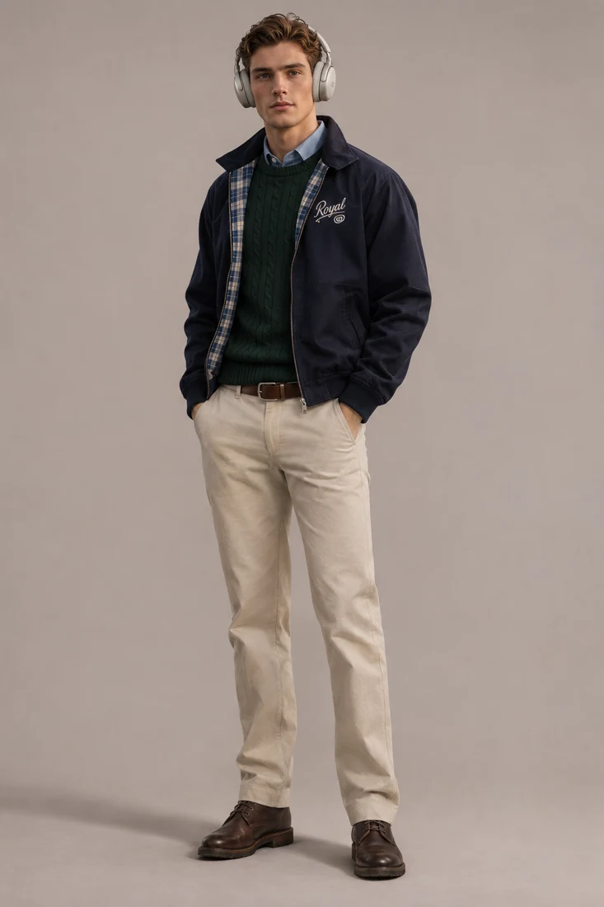
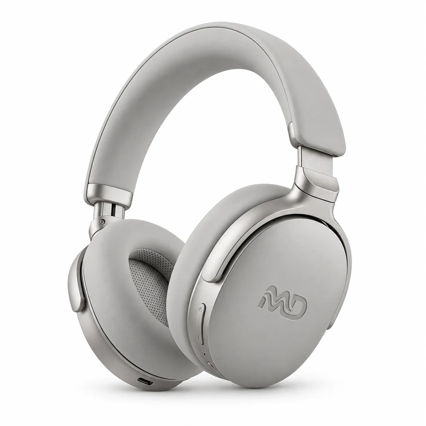
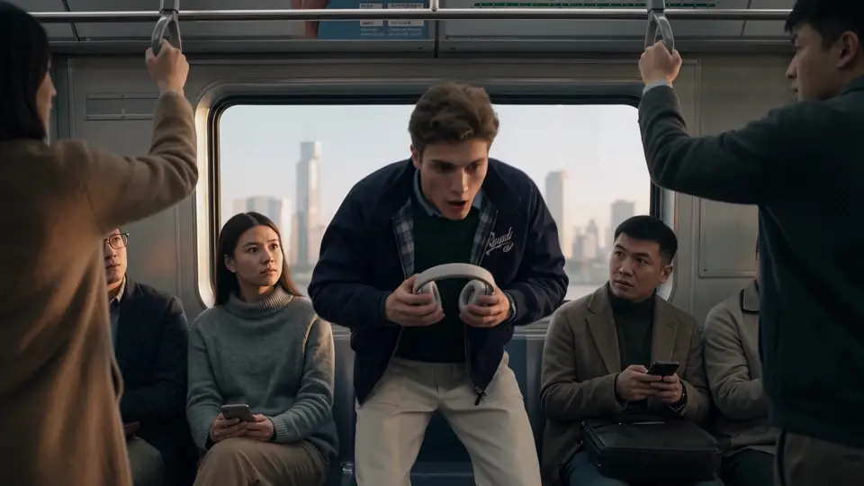

主角造型
主角穿深色夹克，内搭针织衫和衬衫，再配浅色长裤，看起来就像车厢里一位普通的通勤乘客。画面切到上半身时，深色衣领和头发衬出银色耳机的轮廓。服装配色和耳机也为车厢、水下两段提供了共同的识别线索。

耳机概念广告
点击图片放大查看
主角穿深色夹克，内搭针织衫和衬衫，再配浅色长裤，看起来就像车厢里一位普通的通勤乘客。画面切到上半身时，深色衣领和头发衬出银色耳机的轮廓。服装配色和耳机也为车厢、水下两段提供了共同的识别线索。

单品图集中交代头梁的弧度、耳罩的形状和银色外壳。切到车厢里的佩戴近景时，主角低头的侧脸和耳罩同框，暖光勾出外壳边缘。这个镜头既能让观众看清耳机的外形和佩戴比例，也把产品放进了主角的通勤情境。


冷蓝色铺出水下空间，水面透光和上升的气泡交代人物所处的环境。成片从下方仰视，将脸部与银色耳罩留在画面中心。暖色车厢切换到冷蓝水下，镜头用可见的环境变化表现主角戴上耳机后的沉浸感。
车窗形成画面内的框，两侧乘客和吊环把视线引向中间的主角。结尾回到熟悉的车厢构图，主角手持耳机，邻座乘客转头看向他。人物的动作和旁人的反应把故事带回现实，也让结尾和开场的通勤情境形成呼应。

